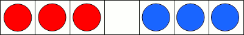
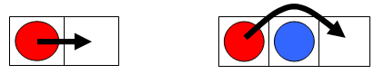

A horizontal row comprising of $2n + 1$ squares has $n$ red counters placed at one end and $n$ blue counters at the other end, being separated by a single empty square in the centre. For example, when $n = 3$.

A counter can move from one square to the next (slide) or can jump over another counter (hop) as long as the square next to that counter is unoccupied.

Let $M(n)$ represent the minimum number of moves/actions to completely reverse the positions of the coloured counters; that is, move all the red counters to the right and all the blue counters to the left.
It can be verified $M(3) = 15$, which also happens to be a triangle number.
If we create a sequence based on the values of $n$ for which $M(n)$ is a triangle number then the first five terms would be:
$1$, $3$, $10$, $22$, and $63$, and their sum would be $99$.
Find the sum of the first forty terms of this sequence.
solve(terms=5) → ?solve(terms=40) → ?solve(terms=100) → ?